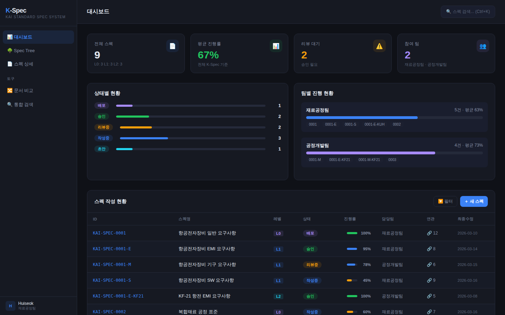
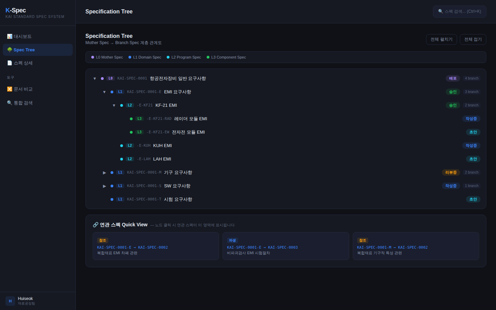
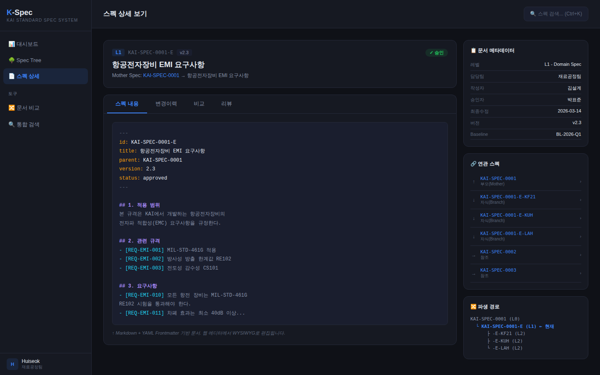

K-Spec 표준 기술문서 관리 시스템
대상: 한국항공우주산업(KAI) 사내 에어갩 환경
주관: 재료공정팀 | 협업: 공정개발팀
문서 버전: v0.2 (Draft)
작성일: 2026년 3월 17일
본 문서는 한국항공우주산업(KAI)의 K-Spec 표준 기술문서 체계 수립을 위한 시스템 초기 아키텍처 설계 제안서입니다. 재료공정팀(주관)과 공정개발팀(협업)이 함께 진행하는 본 과제는 에어갩(Air-gapped) 환경을 전제로, 사내 웹 시스템으로 구축할 수 있는 실현 가능한 방안을 제시합니다.
K-Spec 시스템의 핵심 목표는 다음과 같습니다:
K-Spec과 유사한 목적을 가진 시스템들을 조사하여 벤치마킹하고, 각 시스템의 강점과 K-Spec에 차용 가능한 개념을 정리합니다.
| 시스템 | 핵심 기능 | K-Spec 차용 가능한 개념 | 제약사항 |
|---|---|---|---|
| IBM DOORS
(Next Generation) | Requirements 추적성, Baseline 관리, 모듈별 계층구조, DXL 스크립팅, ReqIF 교환 | Spec Tree 계층구조, Baseline 버전 관리, 요구사항 간 추적성(Traceability) 모델 | 높은 라이선스 비용, 레거시 UI, 에어갩 환경 에서의 설치 복잡성 |
| Siemens Polarion
ALM | LiveDoc™ 문서 협업, LiveBranch™ 브랜치 관리, 문서 재사용, 전자서명, ReqIF 지원 | Master Spec → Branch Spec 관계 관리 패턴, 변경사항 자동 전파, 문서 파생(Derived Documents) | On-premise 배포 가능하나 라이선스 비용 높음, Java 기반 무거운 시스템 |
| Jama Connect | Live Traceability™, AI 기반 요구사항 품질 분석, 혈업 리뷰, 위험 관리 | 요구사항 품질 자동 분석 개념, 위험 기반 추적성, 사업별 컨텍스트 관리 | SaaS 중심 모델로 에어갩 환경에 부적합 |
| Git + Docs-as-Code | 브랜치/머지 버전관리, Pull Request 리뷰 프로세스, diff/비교, 완전한 변경 이력 추적 | Mother/Branch Spec의 브랜치 모델과 완전히 일치, 변경 승인 워크플로우, 에어갩 자체 호스팅 용이 | 비개발자 진입장벽 높음, 별도 웹 UI 필요, 바이너리 파일 처리 한계 |
| MIL-STD / NASA Spec Tree 체계 | Specification Tree 계층구조(System → Subsystem → Component), Configuration Baseline 관리, CCB(Configuration Control Board) | K-Spec의 계층 구조 모델 직접 차용, Mother/Branch/Leaf Spec 계층을 MIL-STD-961 Spec Tree에 대응 | 방법론/프레임워크이지 소프트웨어 시스템이 아님 |
K-Spec 시스템은 위 시스템들의 개념을 종합적으로 차용하되, 에어갩 환경이라는 제약사항을 고려하여 다음과 같은 전략을 채택합니다:
K-Spec 시스템은 3계층 아키텍처로 설계하며, 에어갩 환경에서 완전히 자체 운영 가능한 구조로 구성합니다.
| 계층 | 구성요소 | 역할 |
|---|---|---|
| Presentation Layer (프론트엔드) | React SPA + Tailwind CSS Monaco Editor (Markdown/XML) D3.js / Mermaid (시각화) | 스펙 문서 작성/편집 UI Spec Tree 시각화 문서 비교 리뷰 인터페이스 |
| Application Layer (백엔드 API) | FastAPI (Python) Celery + Redis (비동기 작업) GitPython (Git 연동) | REST API 제공 문서 비교/분석 엔진 스펙 계층 관리 로직 버전/브랜치 관리 |
| Data Layer (저장소) | PostgreSQL (메타데이터/관계) Gitea (자체호스팅 Git 저장소) Elasticsearch (전문검색) MinIO (파일 저장소) | 스펙 문서 버전 이력 저장 Spec Tree 관계 데이터 전문 검색 인덱싱 첨부파일 저장 |
K-Spec의 핵심은 Specification Tree입니다. 항공우주 산업의 표준 Spec Tree 계층을 차용하여 다음과 같이 정의합니다:
| Level | 명칭 | 설명 | 예시 |
|---|---|---|---|
| L0 | K-Spec Master (Mother Spec) | 회사 전체 표준 스펙. 모든 파생 스펙의 근간(root). | KAI-SPEC-0001 항공기 전자장비 일반 요구사항 |
| L1 | Domain Spec (분야별 스펙) | L0에서 파생된 분야별 표준. 전자, 기체, 소프트웨어 등. | KAI-SPEC-0001-E 항공 전자장비 EMI 요구사항 |
| L2 | Program Spec (사업별 스펙) | L1에서 파생된 사업 특화 스펙. KF-21, KUH 등 특정 프로그램용. | KAI-SPEC-0001-E-KF21 KF-21 항전 전자장비 EMI 요구사항 |
| L3 | Component Spec (구성품 스펙) | L2에서 파생된 구성품/부품 수준. 개별 장비/모듈 스펙. | KAI-SPEC-0001-E-KF21-RAD KF-21 레이더 모듈 EMI 요구사항 |
스펙 문서는 구조화된 Markdown 또는 XML 형식으로 작성하며, 웹 기반 편집기를 통해 WYSIWYG 편집을 지원합니다. 문서 내 각 요구사항 항목은 고유 ID를 부여받아 개별 추적이 가능합니다. 기존 Word/PDF 문서 임포트 기능도 포함합니다.
Git 기반 버전관리를 통해 Mother Spec에서 Branch Spec을 파생하는 워크플로우를 제공합니다. Mother Spec의 변경사항을 하위 Branch Spec에 선택적으로 전파(cherry-pick)하거나, Branch Spec의 변경사항을 Mother Spec에 역방향 반영(upstream merge)할 수 있습니다.
기존 문서 관리 플랫폼의 비교 서브시스템과 연동하여, 텍스트 비교(diff), 의미 비교(semantic), 규칙 준수 검사를 수행합니다. K-Spec 제정 과정에서 기존 스펙 문서들 간의 중복/차이/불일치를 탐지하는 데 핵심적인 역할을 합니다.
전체 스펙 문서의 계층 관계를 트리 형태로 시각화하며, 각 노드의 상태(초안/리뷰중/승인/배포), 버전, 변경 이력을 한눈에 파악할 수 있습니다. D3.js 또는 유사 라이브러리를 활용하여 인터랙티브한 탐색을 지원합니다.
스펙 문서의 생애주기를 관리합니다: 초안 → 팀 리뷰 → 부서 승인 → CCB(형상관리위원회) 승인 → 배포(Baseline). 각 단계에서 전자서명과 승인 이력이 기록됩니다.
에어갩 환경의 핵심 제약사항은 외부 인터넷 연결이 차단된다는 점입니다. 따라서 모든 구성요소는 사내 네트워크 내에서 자체 호스팅되어야 합니다.
| 구분 | 구성요소 | 구체적 사양/비고 |
|---|---|---|
| 서버 하드웨어 | x86_64 서버 2대 이상 (실운영 + 백업/테스트) | CPU: 16코어 이상, RAM: 64GB 이상, SSD: 1TB 이상 Docker/Podman 기반 컨테이너 운영을 위한 Linux(RHEL/Rocky) 권장 필요시 가상화(VM) 환경으로 자원 분리 가능 |
| 네트워크 | 사내 LAN 전용 L2/L3 스위치 | 에어갩 구간 전용 VLAN 구성 권장 서버 → 클라이언트 간 HTTPS 통신 방화벽으로 허용된 포트만 개방 |
| 스토리지 | NAS 또는 SAN 볼류 스토리지 | Git 저장소 + 첨부파일 저장을 위한 별도 볼륨 정기 백업용 오프라인 저장 미디어 구비 |
| 인증 | LDAP/AD 연동 (사내 인증 체계 활용) | 기존 사내 인증 체계(Active Directory 등)와 연동 SSO(Single Sign-On) 지원 부서/역할 기반 접근제어(RBAC) |
| 영역 | 기술 | 선정 근거 | 에어갩 호환성 |
|---|---|---|---|
| Frontend | React 18+ TypeScript Tailwind CSS Monaco Editor | SPA로 서버 의존성 최소화 VS Code 동일 편집기 UX NPM 패키지 오프라인 미러링 가능 | ✓ 빌드 후 정적 파일 배포 ✓ CDN 불필요 ✓ 사내 NPM 레지스트리 구축 가능 |
| Backend API | Python 3.11+ FastAPI SQLAlchemy Celery | 문서 처리/NLP 에 강점 비동기 API 네이티브 지원 기존 문서비교 시스템과 통합 | ✓ Python은 에어갩에서 별도 라이선스 불필요 ✓ pip 오프라인 미러링 용이 ✓ 사전 구축한 Docker 이미지 활용 |
| Git 저장소 | Gitea (Self-hosted) | Go 단일 바이너리로 경량 자체 호스팅 설계 GitHub 유사 UI로 진입장벽 낮음 | ✓ 에어갩 완전 호환 ✓ 외부 의존성 없음 ✓ LDAP/AD 연동 내장 |
| DB | PostgreSQL 15+ | JSONB로 스펙 메타데이터 유연 저장 트리 구조 쿼리(CTE) 지원 산업 표준 RDBMS | ✓ 에어갩 완전 호환 ✓ 오픈소스 라이선스 ✓ 백업/복제 용이 |
| 검색엔진 | Elasticsearch 8+ (또는 OpenSearch) | 한글 형태소 분석 지원(nori) 스펙 문서 전문 검색 요구사항 관계 탐색 | ✓ 에어갩 자체 호스팅 ✓ OpenSearch는 완전 오픈소스 ✓ Docker 배포 용이 |
| 파일저장 | MinIO (S3-compatible) | 오브젝트 스토리지 S3 API 호환으로 유연성 확보 대용량 첨부파일 처리 | ✓ 에어갩 자체 호스팅 ✓ Go 단일 바이너리 ✓ 오픈소스(AGPL-3.0) |
| 컨테이너 | Docker + Docker Compose (또는 Podman) | 전체 시스템 컨테이너화 배포/업데이트 자동화 환경 일관성 보장 | ✓ 에어갩에서 이미지 사전 빌드 후 전송 ✓ Podman은 rootless로 보안 강화 ✓ 클러스터 불필요(초기) |
에어갩 환경에서의 배포는 Docker Compose를 활용하여 단일 서버에서 전체 시스템을 운영할 수 있습니다. 초기 구성은 단일 서버로 시작하고, 사용자 확대에 따라 분리합니다.
구성요소 배치 개요:
에어갩 환경에서는 외부 네트워크 접근이 불가하므로, 다음과 같은 배포 전략을 채택합니다:
재료공정팀(주관)과 공정개발팀(협업)이 실제 업무에서 활용할 수 있는 직관적인 인터페이스를 설계합니다. 핵심 사용자는 스펙 작성자, 리뷰어, 표준화 관리자 3개 역할이며, 각 역할별 주요 화면과 기능을 정의합니다.
시스템은 좌측 사이드바 네비게이션 + 우측 메인 콘텐츠 영역의 2컬럼 레이아웃으로 구성합니다. 상단에는 통합 검색바(Ctrl+K)를 배치하여 스펙 ID, 스펙명, 요구사항 내용 등으로 빠르게 문서를 찾을 수 있습니다.
| 화면 | 주요 구성요소 | 대상 사용자 |
|---|---|---|
| 대시보드 | 요약 카드(전체 스펙 수, 평균 진행률, 리뷰 대기, 참여팀) 상태별 현황 차트 팀별 진행 현황 스펙 작성 현황 테이블(진행률 바, 상태 뱃지, 연관 스펙 링크) | 표준화 관리자 (전체 현황 파악) |
| Spec Tree | 계층형 트리 뷰(L0→L1→L2→L3) 레벨별 색상 코드 구분 접기/펼치기 토글 연관 스펙 Quick View 패널 파생 관계(부모/자식/참조) 시각화 | 모든 사용자 (스펙 관계 탐색 및 식별) |
| 스펙 상세 | 좌: 문서 본문(Markdown+YAML Frontmatter 편집기) 우: 사이드바(메타데이터, 연관스펙, 파생경로) 탭: 스펙내용 | 변경이력 | 비교 | 리뷰 | 스펙 작성자 (문서 작성/편집) |
| 문서 비교 | 버전 간 diff 뷰 (side-by-side) 스펙 간 비교(중복/차이/불일치 하이라이트) 기존 문서비교 서브시스템 3개 모듈 연동 | 스펙 작성자 리뷰어 |
| 통합 검색 | 스펙 ID, 스펙명, 요구사항 본문 통합 검색 필터(레벨, 상태, 담당팀, 사업) 검색 결과에서 바로 Spec Tree/상세 이동 | 모든 사용자 |
대시보드는 시스템 진입 시 가장 먼저 보게 되는 화면으로, K-Spec 제정 과정의 전체 진행 상황을 한눈에 파악할 수 있습니다.
요약 카드 영역 (4칸):
상태별 현황 차트:
스펙 문서의 5개 상태(초안, 작성중, 리뷰중, 승인, 배포)별 분포를 프로그레스 바로 시각화합니다. 각 상태는 고유 색상 코드로 구분되어 직관적으로 인지할 수 있습니다.
팀별 진행 현황:
재료공정팀과 공정개발팀 각각의 담당 스펙 수, 평균 진행률을 별도 카드로 표시하여 팀 간 진행 상황을 비교할 수 있습니다.
스펙 작성 현황 테이블:
전체 스펙 목록을 테이블 형태로 표시합니다. 각 행에는 스펙 ID, 스펙명, 레벨, 상태 뱃지, 진행률 바, 담당팀, 연관 스펙 수, 최종 수정일이 표시됩니다. 연관 스펙 수를 클릭하면 Spec Tree 화면으로 이동하여 관계를 확인할 수 있습니다. 필터 및 새 스펙 작성 버튼을 상단에 배치합니다.

[그림 6-1] 대시보드 화면 - 스펙 작성 현황, 상태별/팀별 진행 현황 종합 뷰
K-Spec의 핵심 화면으로, Mother Spec에서 Branch Spec으로 이어지는 계층 관계를 트리 형태로 시각화합니다.
트리 노드 구성:
연관 스펙 Quick View 패널:
트리에서 노드를 선택하면 하단 패널에 해당 스펙의 연관 관계가 즉시 표시됩니다. 관계 유형(참조, 파생, derive, satisfy)별로 카드 형태로 표시하며, 각 카드에는 출발 스펙 → 대상 스펙 ID와 관계 설명이 포함됩니다. 이를 통해 스펙 간 영향 범위를 빠르게 식별할 수 있습니다.

[그림 6-2] Spec Tree 화면 - Mother/Branch Spec 계층 관계 및 연관 스펙 Quick View
개별 스펙 문서를 열었을 때의 화면으로, 2컬럼 레이아웃으로 구성합니다.
좌측 메인 영역:
우측 사이드바:

[그림 6-3] 스펙 상세 화면 - 문서 편집기, 메타데이터, 연관 스펙, 파생 경로
| 역할 | 주요 워크플로우 | 주요 화면 |
|---|---|---|
| 스펙 작성자 (재료공정팀 공정개발팀) | 1. 대시보드에서 담당 스펙 확인 2. 스펙 상세에서 문서 작성/편집 3. 기존 스펙과 비교 탭으로 중복/차이 확인 4. 리뷰 요청 제출 | 스펙 상세 문서 비교 대시보드 |
| 리뷰어 (부서 책임자) | 1. 대시보드에서 리뷰 대기 스펙 확인 2. 스펙 상세 → 리뷰 탭에서 변경사항 확인 3. 비교 탭으로 이전 버전과 diff 확인 4. 승인/반려 처리 | 스펙 상세 문서 비교 대시보드 |
| 표준화 관리자 | 1. 대시보드에서 전체 진행 현황 모니터링 2. Spec Tree에서 전체 계층구조 점검 3. Mother Spec 변경 시 Branch Spec 역향 확인 4. CCB 승인 및 Baseline 배포 | 대시보드 Spec Tree 스펙 상세 |
이 종류의 프로젝트를 시작할 때 일반적으로 수행하는 초기 단계를 정의합니다.
| # | 단계 | 주요 활동 | 산출물 |
|---|---|---|---|
| 1 | 요구사항 분석 (2주) | • 기존 스펙 문서 현황 조사(종류, 수량, 형식) • 이해관계자 인터뷰(설계, 품질, 표준화 부서) • K-Spec 계층구조 초안 수립 • 에어갩 환경 제약사항 확인 | • 요구사항 정의서 • 기존 스펙 인벤토리 • Spec Tree 초안 |
| 2 | PoC 개발 (4주) | • Docker Compose 기반 개발환경 구축 • 핵심 3개 모듈 PoC: 스펙 작성, Spec Tree, 비교 • Gitea + 백엔드 API 통합 검증 • 기존 Word/PDF 스펙 임포트 테스트 | •PoC 데모 시스템 • 기술 검증 보고서 • 아키텍처 결정 문서(ADR) |
| 3 | 상세 설계 (3주) | • PoC 결과 기반 상세 아키텍처 설계 • 데이터 모델 상세 설계(ERD) • API 스펙 정의(OpenAPI) • 워크플로우 상세 설계 • 보안/인증 설계 | • 상세 설계서 • ERD 및 API 스펙 • UI/UX 와이어프레임 |
| 4 | MVP 개발 (8주) | • 핵심 기능 구현(스펙 CRUD, Spec Tree, 버전관리) • 문서 비교 엔진 통합 • 승인 워크플로우 구현 • 파일랿 사용자 테스트(UAT) | • MVP 시스템 • 사용자 매뉴얼 • 파일랿 테스트 결과 |
| 5 | 에어갩 배포 (2주) | • 에어갩 환경 배포 및 검증 • LDAP/AD 연동 • 보안 검증 및 평가 • 운영 매뉴얼 작성 | • 운영 시스템 • 운영/배포 매뉴얼 • 보안 검증 보고서 |
총 예상 기간: 약 19주 (5개월)
위 일정은 최소 규모의 MVP 기준이며, 조직 규모와 기존 시스템 통합 범위에 따라 조정됩니다.
결정: Markdown + YAML Frontmatter를 기본 저장 형식으로 채택
근거: Git diff와 완벽하게 호환되며, 텍스트 기반이므로 변경 추적이 용이합니다. YAML Frontmatter에 스펙 메타데이터(버전, 상태, 부모 스펙 ID, 작성자 등)를 구조화하여 저장합니다. 기존 Word/PDF 문서는 임포트 시 변환 처리합니다.
결정: Git 브랜치 = Spec Tree 계층 매핑 전략 채택
근거: Mother Spec은 main 브랜치, Branch Spec은 Git 브랜치로 매핑하여 Git의 브랜치/머지/체리픽 기능을 스펙 변경 전파에 자연스럽게 활용합니다. Tag를 활용하여 Baseline 버전을 관리합니다.
결정: Elasticsearch + nori 형태소 분석기를 활용한 한국어 전문 검색
근거: 항공우주 기술문서는 한국어/영어 혼용이 많으며, 전문 용어 검색이 중요합니다. nori 분석기는 한국어 형태소 분석을 지원하며, 사용자 사전 기능으로 도메인 전문 용어를 추가할 수 있습니다.
결정: 기존 개발 중인 문서비교 서브시스템을 K-Spec의 비교 엔진으로 통합
근거: 이미 개발 중인 텍스트 비교, 의미 비교, 규칙 준수 검사 3개 모듈을 K-Spec 시스템의 문서 분석 파이프라인에 통합합니다. K-Spec 제정 과정에서 기존 스펙들을 비교/분석하는 데 직접 활용됩니다.
본 문서는 초기 아키텍처 제안서로서, 요구사항 분석 및 PoC 결과에 따라 상세 설계가 변경될 수 있습니다.